ПОДОГРЕВАТЕЛЬ ПОДУШКИ ПЕРЕДНЕГО СИДЕНЬЯ (для моделей с сиденьями с электроприводом) > СНЯТИЕ |
| 1. СНИМИТЕ ПЕРЕДНЕЕ СИДЕНЬЕ В СБОРЕ |
Снимите переднее сиденье в сборе (Нажмите здесь).
| 2. СНИМИТЕ РУЧКУ ПЕРЕКЛЮЧАТЕЛЯ ЭЛЕКТРОПРИВОДА ПЕРЕМЕЩЕНИЯ СИДЕНЬЯ ПО НАПРАВЛЯЮЩИМ И ПО ВЕРТИКАЛИ |
 |
С помощью съемника молдингов отцепите 2 захвата и снимите ручку.
| 3. СНИМИТЕ РУЧКУ ПЕРЕКЛЮЧАТЕЛЯ ЭЛЕКТРОПРИВОДА НАКЛОНА СИДЕНЬЯ |
 |
С помощью съемника молдингов отцепите 2 захвата и снимите ручку.
| 4. СНИМИТЕ ЗАЩИТНЫЙ ЩИТОК ПОДУШКИ ЛЕВОГО ПЕРЕДНЕГО СИДЕНЬЯ |
Отсоедините разъем электродвигателя подъема.
Выверните винт внутреннего защитного щитка подушки переднего сиденья № 1 и отсоедините направляющую.
Освободите фиксатор внутреннего защитного щитка подушки переднего сиденья № 1.
С помощью съемника молдингов освободите 3 захвата и направляющую.
Переместите защитный щиток подушки в направлении, указанном стрелкой, чтобы освободить фиксатор и снять внутренний защитный щиток подушки переднего сиденья 1 с защитным щитком подушки как единый узел.
| 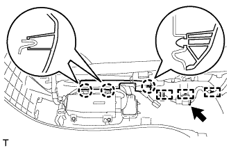 |
Освободите 3 захвата и откройте крышку жгута проводов.
Освободите 3 зажима жгута проводов и отсоедините разъем жгута проводов сиденья.
| 5. СНИМИТЕ ПЕРЕКЛЮЧАТЕЛЬ ЭЛЕКТРОПРИВОДА ЛЕВОГО ПЕРЕДНЕГО СИДЕНЬЯ |
Выверните 3 винта.
| 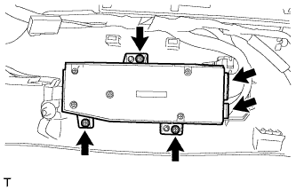 |
для моделей с запоминающими устройствами сидений:
Отсоедините 2 разъема переключателя электропривода сиденья и снимите переключатель.
| 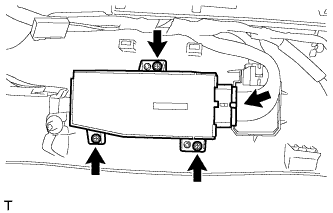 |
для моделей без запоминающих устройств сидений:
Отсоедините разъем переключателя электропривода сиденья и снимите переключатель.
| 6. СНИМИТЕ ПЕРЕКЛЮЧАТЕЛЬ ЭЛЕКТРОПРИВОДА ОПОРЫ ПОЯСНИЦЫ (со стороны водителя) |
| 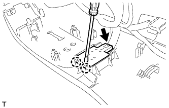 |
С помощью отвертки расцепите 2 захвата.
Отсоедините разъем переключателя электропривода опоры поясницы и снимите переключатель электропривода опоры поясницы.
| 7. СНИМИТЕ ВНУТРЕННИЙ ЗАЩИТНЫЙ ЩИТОК ПОДУШКИ ЛЕВОГО ПЕРЕДНЕГО СИДЕНЬЯ |
| 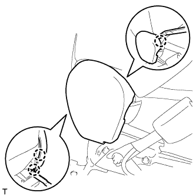 |
С помощью съемника молдингов освободите 3 захвата и снимите защитный щиток подушки.
| 8. СНИМИТЕ ВНУТРЕННИЙ ЗАЩИТНЫЙ ЩИТОК ПОДУШКИ ПРАВОГО ПЕРЕДНЕГО СИДЕНЬЯ (со стороны переднего пассажира) |
| 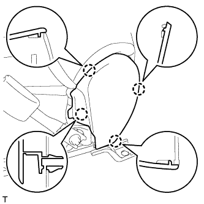 |
С помощью съемника молдингов освободите 4 захвата и снимите защитный щиток подушки.
| 9. СНИМИТЕ ЗАМОК РЕМНЯ БЕЗОПАСНОСТИ ЛЕВОГО ПЕРЕДНЕГО СИДЕНЬЯ В СБОРЕ |
Со стороны водителя:
Отсоедините разъем и освободите 4 зажима.
Со стороны переднего пассажира:
Отсоедините 2 разъема и освободите 3 зажима.
 |
Отверните гайку и снимите замок ремня безопасности переднего сиденья.
| 10. СНИМИТЕ ОБИВКУ ПОДУШКИ СИДЕНЬЯ ВМЕСТЕ С ПОДУШКОЙ |
| 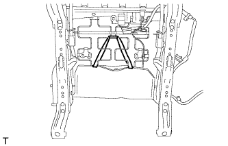 |
Снимите резиновую ленту с пружины подушки сиденья.
| 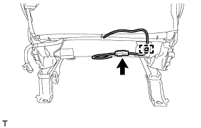 |
Отсоедините разъем подогревателя сиденья и освободите зажим жгута проводов.
| 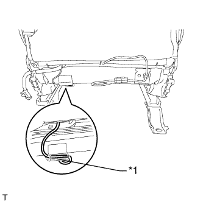 |
Для моделей с боковой подушкой безопасности переднего сиденья:
Отсоедините крепежную ленту и откройте крышку.
| *1 | Крепежная лента |
Отсоедините жгут проводов подушки безопасности.
| 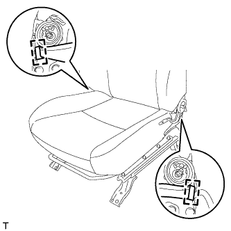 |
Отцепите 2 крюка.
| 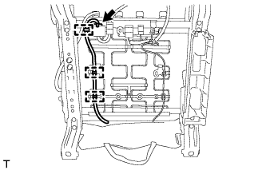 |
Отсоедините разъем подогревателя сиденья и открепите 3 зажима жгута проводов.
Отсоедините крепления.
| 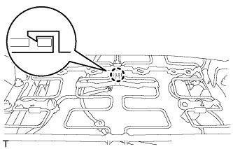 |
Со стороны переднего пассажира:
Освободите захват и отсоедините разъем.
Снимите обивку подушки сиденья вместе с подушкой.
| 11. СНИМИТЕ ОБИВКУ ПОДУШКИ РАЗДЕЛЬНОГО ПЕРЕДНЕГО СИДЕНЬЯ |
| 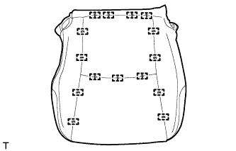 |
Снимите витковые пружины и обивку подушки сиденья с подушки сиденья.
| 12. СНИМИТЕ ПОДОГРЕВАТЕЛЬ ПОДУШКИ ЛЕВОГО ПЕРЕДНЕГО СИДЕНЬЯ В СБОРЕ |
| 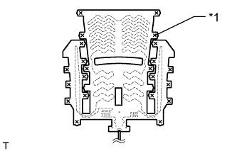 |
Срежьте закрепки и снимите подогреватель подушки переднего сиденья с обивки подушки переднего сиденья.
| *1 | Стяжка |